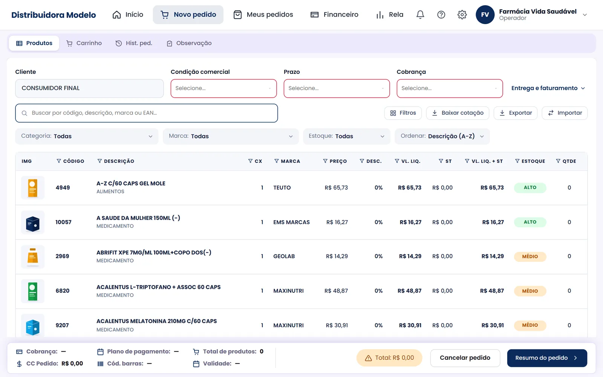
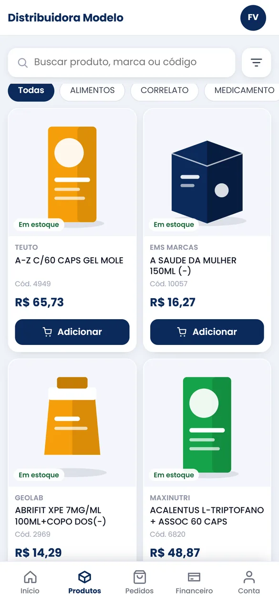
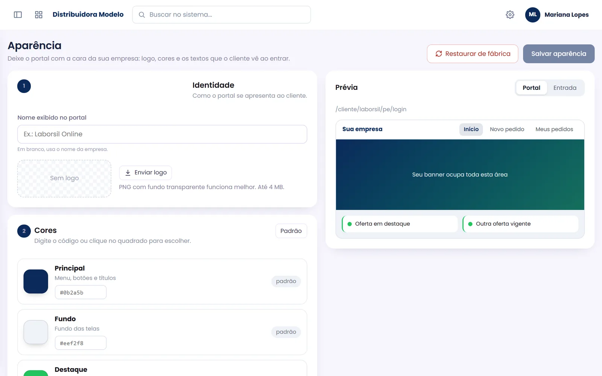
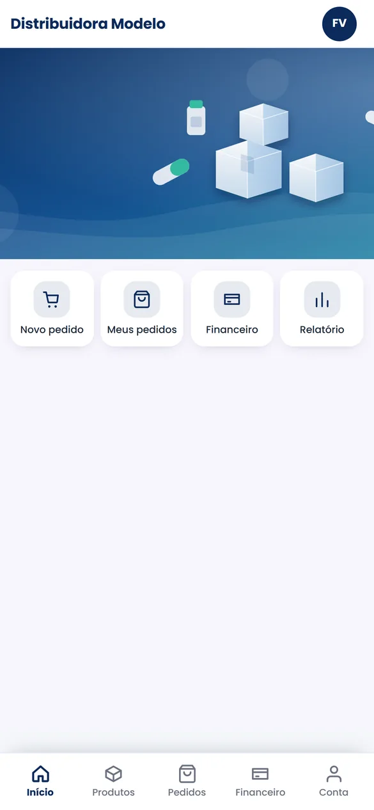

Acesse o canal
Cliente, vendedor ou representante entra no Pedido Eletrônico.
Catálogo, preço, estoque e condições comerciais disponíveis para o cliente pedir pelo celular ou pelo computador, conforme o escopo da integração com o ERP.


O usuário trabalha em uma experiência digital e o pedido continua respeitando a estrutura comercial da empresa.
Cliente, vendedor ou representante entra no Pedido Eletrônico.
Produtos, preço, estoque e condições aparecem no fluxo de compra.
Os itens são selecionados e o pedido é validado antes do envio.
O pedido segue para processamento e o status pode ser acompanhado.
Os principais elementos da venda ficam próximos, reduzindo consultas paralelas e retrabalho.
Produtos e informações comerciais organizados para facilitar a compra.
Consulta de preço e disponibilidade de acordo com a estrutura comercial.
Dados do cliente e condições comerciais aplicados ao pedido.
Mais clareza sobre envio, validação, processamento e retorno.
Arquitetura preparada para integração com diferentes ERPs, com destaque para o WinThor TOTVS e adaptação conforme os recursos técnicos disponíveis.
O mesmo ecossistema pode trabalhar junto da equipe interna de vendas.
O valor do canal B2B está em aproximar catálogo, informação comercial e fechamento do pedido. A experiência fica mais simples para o usuário, enquanto regras e processamento continuam alinhados ao ambiente da empresa.
O canal permite selecionar o cliente, pesquisar produtos e adicionar quantidades em uma jornada objetiva.
DescobertaInformações comerciais podem ser apresentadas conforme dados e regras fornecidos pela integração.
DecisãoQuantidade, itens, condição comercial e prazo formam um pedido padronizado antes do envio.
ConversãoLinks específicos podem simplificar o acesso de cada cliente ao canal autorizado.
DistribuiçãoA experiência foi organizada em torno das decisões que acontecem antes, durante e depois do fechamento do pedido.
Funcionalidade, integração e processo precisam caminhar juntos. Estes são os pontos que mais influenciam a qualidade do projeto e a adoção da equipe.
Preço, estoque, condições, limites e status disponíveis no canal dependem dos dados que o ERP e a arquitetura de integração conseguem fornecer para o projeto.
O administrador do Pedido Eletrônico personaliza logo, cores, textos e banners do portal, e acompanha as vendas e a adesão dos clientes.


A proposta é criar um canal de venda moderno conectado às informações que já sustentam a operação comercial, seja em WinThor TOTVS ou em outros ERPs tecnicamente integráveis.
Apresente seu ERP, sua rotina comercial e como os pedidos chegam hoje. A Epiper avalia a melhor forma de estruturar o canal e a integração.
O Pedido Eletrônico da Epiper é um portal de pedidos B2B para distribuidoras, um e-commerce B2B em que o cliente acessa o catálogo online com preço e estoque, aplica as condições comerciais e faz o pedido online pelo celular ou pelo computador, como um app de pedidos para clientes. A integração com o ERP é avaliada para o ambiente de cada distribuidora.